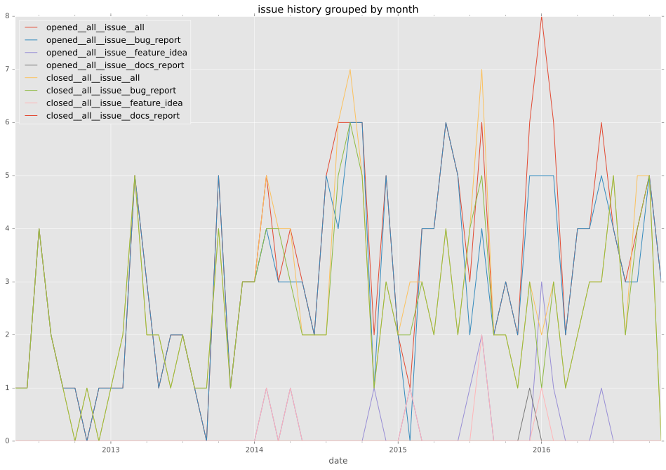
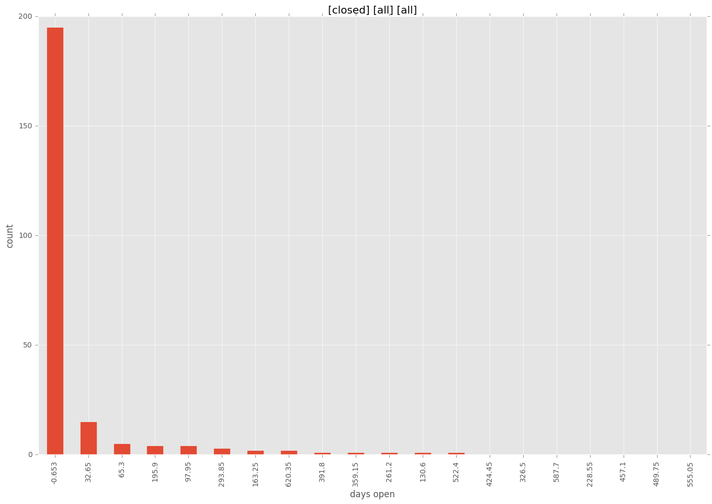

authors
maintainers
- ansible
contributors
- risaacson : 19 commits
- skinp : 4 commits
- jpmens : 10 commits
- mpdehaan : 32 commits
- gtrafimenkov : 1 commits
- sfromm : 1 commits
- tksmd : 1 commits
- mgedmin : 1 commits
- mavimo : 2 commits
- jeffwidman : 1 commits
- dagwieers : 2 commits
- skvidal : 3 commits
- mvo5 : 1 commits
- pfalcon : 7 commits
- mscherer : 2 commits
- billwanjohi : 2 commits
- bertvv : 1 commits
- lgp171188 : 1 commits
- abadger : 31 commits
- bcoca : 39 commits
- ewigkeit1204 : 6 commits
- tgerla : 1 commits
- dhozac : 2 commits
- jimi-c : 6 commits
total issue counts
unknown: 2
feature pull request: 18
docs report: 1
pullrequest: 141
docs pull request: 7
bugfix pull request: 114
feature idea: 9
issue: 126
new plugin: 1
bug report: 115
issue history

pullrequest history
days open by issue type
bugfix pull request
count: 164
std: 57.7354624354
min: 0
max: 653
median: 0.0
mean: 11.2865853659
all
count: 295
std: 82.2264105361
min: 0
max: 653
median: 0.0
mean: 25.5152542373
pullrequest
count: 0
std: nan
min: nan
max: nan
median: nan
mean: nan
docs pull request
count: 8
std: 21.947990471
min: 0
max: 50
median: 5.5
mean: 18.0
docs report
count: 0
std: nan
min: nan
max: nan
median: nan
mean: nan
feature pull request
count: 20
std: 164.249681567
min: 0
max: 637
median: 7.0
mean: 87.2
feature idea
count: 3
std: 302.840442037
min: 0
max: 528
median: 7.0
mean: 178.333333333
issue
count: 0
std: nan
min: nan
max: nan
median: nan
mean: nan
new plugin
count: 1
std: nan
min: 156
max: 156
median: 156.0
mean: 156.0
bug report
count: 96
std: 75.5266763317
min: 0
max: 423
median: 1.0
mean: 32.2604166667
closures grouped by total days open
